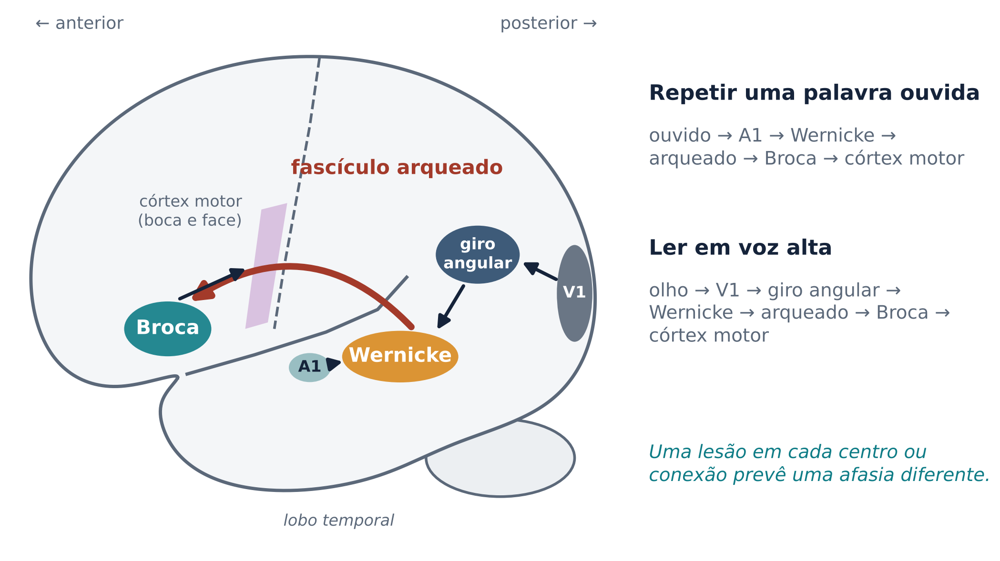
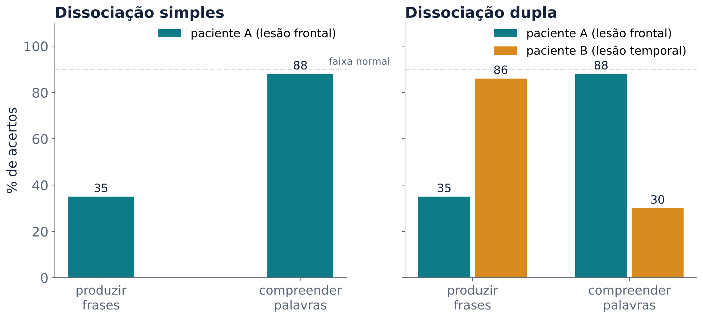
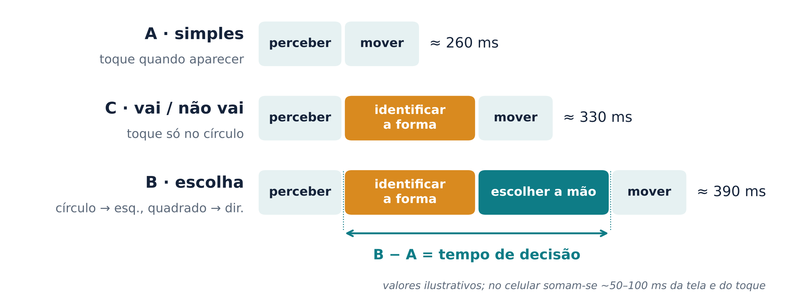
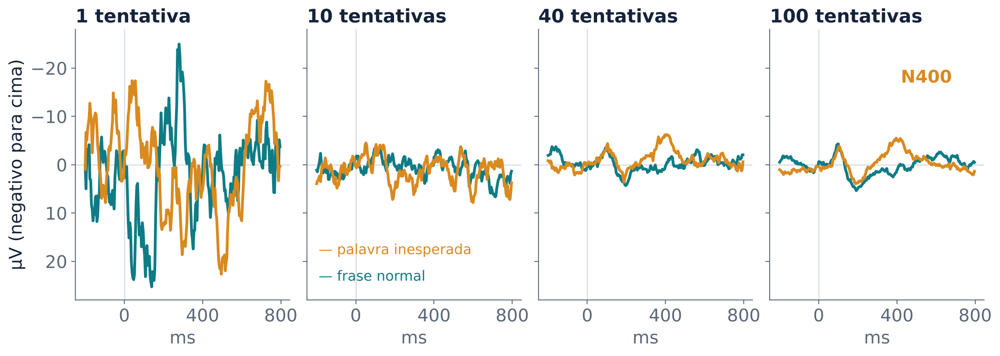
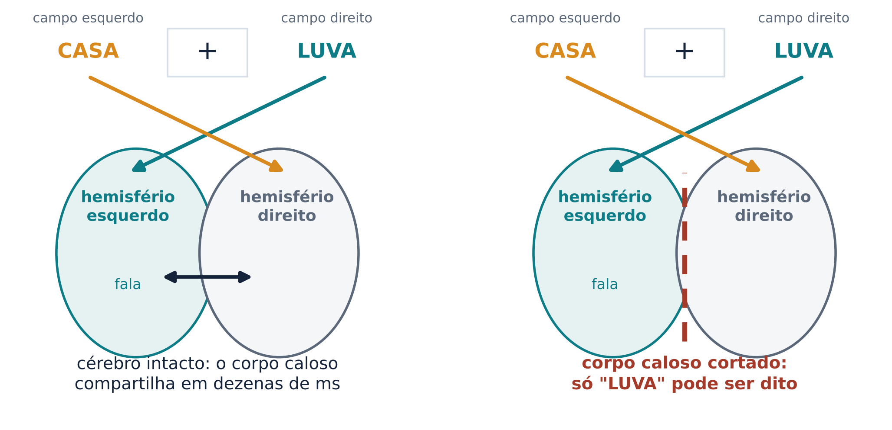
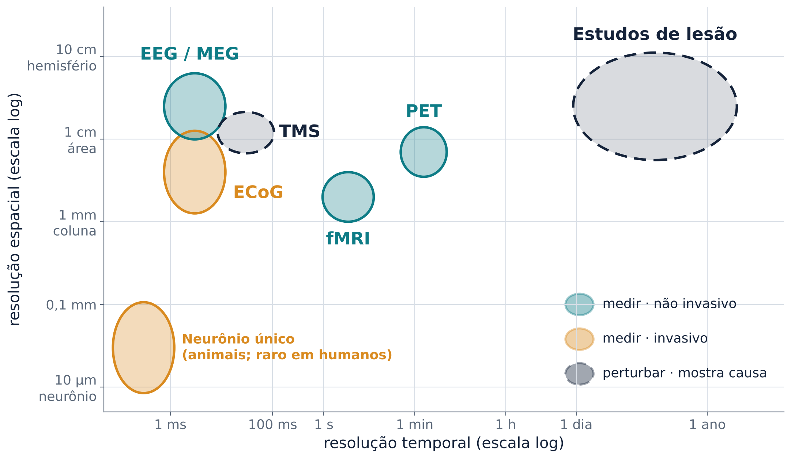

Do paciente que só dizia “tan” às imagens do cérebro: o que cada método mostra e o que ele não consegue mostrar
Hoje a pergunta é: como alguém descobriu o que cada parte do cérebro faz? Não dá para abrir a cabeça de uma pessoa saudável e olhar o que acontece quando ela fala. A história da área é uma história de métodos indiretos, cada um com seus pontos cegos.
No começo do século XIX, Franz Joseph Gall achava que as capacidades mentais deixavam marcas no formato do crânio, ideia que deu origem à frenologia, hoje uma pseudociência. Pierre Flourens, ao contrário, defendia que percepção e ações voluntárias dependiam do cérebro como um todo. E Jean-Baptiste Bouillaud reuniu muitos casos de lesão frontal com perda da fala (Mildner, 2008, p. 46). E um médico do interior da França, Marc Dax, notou que, entre 40 pacientes com lesão cerebral e problemas de fala, nenhum tinha lesão no hemisfério direito; o relato passou despercebido (Mildner, 2008, p. 47).
O paciente Louis Victor Leborgne chegou ao hospital de Bicêtre, em Paris, com uma enorme dificuldade de falar: dizia apenas a sílaba “tan”, às vezes repetida (“tan, tan”) e quase sempre acompanhada de gestos (Small; Hickok, 2016; Domanski, 2013). Depois que ele morreu, o médico Paul Broca fez a autópsia e encontrou uma lesão na parte posterior do giro frontal inferior esquerdo. Broca apresentou o caso à Sociedade de Antropologia de Paris em 1861. Um segundo paciente, Lelong, falava só cinco palavras e tinha uma lesão parecida (Small; Hickok, 2016). Broca reuniu depois outros pacientes que tinham perdido a fala, todos com lesão no hemisfério esquerdo, à frente da área motora (Mildner, 2008, p. 47). A região ganhou o nome de área de Broca.
Afasia é o nome geral de um distúrbio da linguagem causado por lesão cerebral em quem antes falava normalmente. Na afasia de Broca, a fala é escassa, lenta, com esforço e “telegráfica”, sem artigos e conjunções, e a compreensão fica relativamente preservada (Mildner, 2008, p. 231). É o primeiro método da área: descrever o sintoma em vida e procurar a lesão na autópsia (Mildner, 2008, p. 51).
Os cérebros de Leborgne e Lelong estão guardados até hoje. Em 2007, eles foram examinados com ressonância de alta resolução (Dronkers et al., 2007): as imagens confirmaram a lesão frontal e mostraram que ela atingia estruturas mais profundas e a substância branca abaixo do córtex, que Broca não podia ver (Small; Hickok, 2016). É a primeira lição de método da aula: uma lesão natural raramente respeita os limites de uma única área.
Em 1874, Carl Wernicke descreveu pacientes com um quadro quase oposto (Small; Hickok, 2016). A lesão ficava na parte posterior do giro temporal superior esquerdo, perto do córtex auditivo. Eles falavam com fluência, rápido e sem esforço, mas a fala era cheia de palavras trocadas e quase sem sentido, e eles compreendiam mal o que ouviam e liam (Mildner, 2008, p. 232). É a afasia de Wernicke, e a região ficou conhecida como área de Wernicke.
Wernicke foi além: se um centro percebe a fala e outro a produz, uma lesão que corte a ligação entre eles deveria produzir um terceiro quadro: a afasia de condução, em que a pessoa compreende e fala com relativa fluência, mas tem grande dificuldade para repetir o que ouve (Mildner, 2008, p. 31, 232).
Em 1885, Ludwig Lichtheim transformou essas ideias num diagrama (Lichtheim, 1885): um centro motor (Broca), um centro auditivo (Wernicke) e um campo de conceitos, ligados entre si, ao ouvido e à boca. Cada ponto do diagrama é um lugar possível de lesão, com um padrão previsto de fala, compreensão e repetição (Small; Hickok, 2016).
A força do diagrama é fazer previsões testáveis. Se a via entre o centro auditivo e o motor estiver intacta, mas a ligação com os conceitos estiver cortada, a pessoa deveria repetir sem entender o que repete. Esse quadro existe: é a afasia transcortical sensorial. No caso simétrico, a afasia transcortical motora, a pessoa entende e repete, mas quase não inicia a fala por conta própria (Mildner, 2008, p. 233).
Em 1965, Norman Geschwind retomou os modelos de centros e deu destaque às conexões: muitos sintomas viriam de cortar a ligação entre regiões intactas (Geschwind, 1965; Small; Hickok, 2016). Daí o nome modelo de Wernicke–Geschwind (Figura 1). Para repetir uma palavra ouvida, o sinal iria do córtex auditivo à área de Wernicke e, pelo fascículo arqueado, à área de Broca e ao córtex motor. O fascículo arqueado é o principal feixe de substância branca da via superior, ou dorsal, entre essas regiões (Przeździk et al., 2019). Para ler em voz alta, a entrada seria o córtex visual, e o sinal passaria pelo giro angular antes de chegar à área de Wernicke (Mildner, 2008, p. 76).

Um exemplo clássico de desconexão é a alexia sem agrafia, descrita por Joseph Déjerine em 1892. Após uma lesão no lobo occipital esquerdo e em parte do corpo caloso, a pessoa escreve, mas não lê nem o que acabou de escrever: a informação visual não alcança mais o giro angular esquerdo (Mildner, 2008, p. 237).
O paciente A, com lesão frontal, produz frases muito mal e compreende palavras quase normalmente: uma dissociação simples. Talvez produzir frases seja só mais difícil, e qualquer lesão afete primeiro a tarefa difícil.
O paciente B, com lesão temporal, mostra o padrão inverso. Juntos, A e B formam uma dissociação dupla (Figura 2): a dificuldade não explica os dois casos, e as funções dependem, ao menos em parte, de sistemas diferentes. Obter duplas dissociações entre funções e regiões é o objetivo central da análise de lesões (Small; Hickok, 2016).

A grande força do método de lesão é mostrar que uma região é necessária para uma função: sem ela, a função falha. Os métodos que medem atividade (EEG, fMRI) mostram que uma região participa de uma tarefa, o que é diferente. Uma região pode se ativar numa tarefa sem ser indispensável para ela (Mildner, 2008, p. 61-63).
O método de lesão tem limites sérios (Mildner, 2008, p. 52-53):
O modelo de Wernicke–Geschwind ainda ajuda a estimar onde está uma lesão (Mildner, 2008, p. 78), mas é só uma primeira aproximação.
A área de Broca não basta para a afasia de Broca. J. P. Mohr e colegas analisaram 20 casos documentados: um infarto restrito à área de Broca e arredores causava mutismo seguido de melhora rápida, enquanto a afasia de Broca duradoura exigia um infarto bem maior, que incluía a ínsula e regiões vizinhas (Mohr et al., 1978). O mesmo vale para Wernicke: lesões restritas à sua área dão um quadro passageiro (Mildner, 2008, p. 232).
A área de Broca não é só “produção”. Pacientes com afasia de Broca entendem frases cujo sentido pode ser adivinhado pelas palavras principais, mas erram quando só a estrutura gramatical diz quem fez o quê (Mildner, 2008, p. 231). Achados desse tipo, associados ao trabalho de Caramazza e Zurif (1976), levaram à ideia de que a região participa da sintaxe. Essa interpretação é debatida: Hickok e Poeppel (2016) lembram que a ligação entre área de Broca e compreensão sintática vem sendo seriamente questionada. A região também participa de memória de trabalho verbal e de funções não linguísticas (Tippett; Hillis, 2016).
Há mais feixes e mais regiões. Além do fascículo arqueado (via dorsal), há vias ventrais entre os lobos temporal e frontal, como o fascículo fronto-occipital inferior e o uncinado. A via dorsal é fortemente lateralizada à esquerda; a ventral é mais bilateral (Przeździk et al., 2019).
Os mapas variam de pessoa para pessoa. George Ojemann e colegas estimularam eletricamente o córtex de 117 pacientes durante cirurgias. Os pontos em que a estimulação atrapalhava a nomeação formavam mosaicos pequenos, de 1 a 2 cm², muito menores que as áreas clássicas e com grande variação entre pessoas (Ojemann et al., 1989). Alguns ficavam bem fora das áreas previstas pelo modelo (Mildner, 2008, p. 77).
F. C. Donders teve uma ideia simples: medir quanto tempo leva um processo mental subtraindo tempos de reação de tarefas que diferem por uma etapa (Donders, 1969). Numa tarefa simples, a pessoa aperta um botão assim que qualquer estímulo aparece: basta perceber e mover. Numa tarefa de escolha, cada estímulo pede uma resposta diferente, e é preciso também identificar o estímulo e escolher a resposta. A diferença entre as duas estima o tempo dessas etapas (Figura 3). Sem a subtração, o tempo da decisão e o do movimento ficam somados no tempo de reação (Mildner, 2008, p. 63-64).

A subtração supõe que acrescentar uma etapa não muda as outras, o que nem sempre é verdade. A mesma lógica sobrevive nas imagens do cérebro: tarefa menos controle (Mildner, 2008, p. 57, 61).
O eletroencefalograma (EEG) registra, com eletrodos no couro cabeludo, a atividade elétrica do cérebro. Ele soma a atividade de muitíssimos neurônios, além de sinais da pele, dos músculos e dos olhos (Mildner, 2008, p. 59). A resposta a uma palavra é pequena e fica escondida nesse fundo. Para encontrá-la, os pesquisadores repetem o mesmo tipo de estímulo muitas vezes e tiram a média dos trechos de EEG alinhados ao estímulo. O ruído varia de uma tentativa para outra e se cancela; a resposta se repete e fica. O resultado é o potencial relacionado a eventos (ERP); em geral, de 10 a 100 repetições bastam (Mildner, 2008, p. 59) (Figura 4).

Em 1980, Marta Kutas e Steven Hillyard registraram o EEG de pessoas lendo frases. Quando uma palavra não fazia sentido no contexto, surgia uma onda negativa tardia, a N400; uma palavra apenas fisicamente estranha (escrita em letras maiores) produzia uma onda positiva. A N400, portanto, não é reação a qualquer surpresa, e sim ao significado (Kutas; Hillyard, 1980). Seu pico fica perto de 400 ms depois da palavra (Mildner, 2008, p. 59). Erros de gramática produzem outro efeito, positivo e mais tardio, medido entre 500 e 800 ms: a P600. Em inglês, “os castores às vezes derretem” gera N400, e “os castores às vezes mastigando” gera P600 (Van Berkum; Nieuwland, 2019).
O ponto forte do EEG é o tempo (milissegundos); o fraco é o lugar: o sinal no couro cabeludo não diz bem de onde vem (Mildner, 2008, p. 59). O magnetoencefalograma (MEG) registra os campos magnéticos gerados pelas mesmas correntes, com precisão temporal na ordem de 1 ms; localiza melhor que o EEG porque o crânio quase não afeta os campos magnéticos (Mildner, 2008, p. 60-61).
A tomografia por emissão de pósitrons (PET) mede o fluxo de sangue no cérebro. A pessoa recebe uma pequena dose de um marcador radioativo, como água com oxigênio-15, que se acumula nas regiões em proporção ao fluxo sanguíneo local (Mildner, 2008, p. 61). A PET esteve entre as primeiras aplicações das imagens funcionais ao estudo da linguagem, com estudos do processamento de palavras isoladas (Petersen et al., 1988; Small; Hickok, 2016). Ela tem resolução espacial de 3 a 4 mm, mas é lenta (até cerca de 60 s por medida) e expõe a pessoa a radiação (Mildner, 2008, p. 61).
A ressonância magnética funcional (fMRI) dispensa o marcador radioativo (Small; Hickok, 2016). Ela aproveita uma propriedade do sangue: a hemoglobina sem oxigênio tem propriedades magnéticas diferentes da hemoglobina com oxigênio. Quando uma região trabalha mais, chega a ela mais oxigênio do que ela consome, o que altera o sinal: é o sinal BOLD (do inglês blood oxygenation level dependent). A fMRI tem boa resolução espacial (1 a 2 mm), não usa radiação e pode ser repetida muitas vezes. Mas mede a atividade neural de forma indireta e lenta: as primeiras mudanças aparecem segundos depois do início da atividade (Mildner, 2008, p. 57). E o aparelho é barulhento (Mildner, 2008, p. 56), o que complica estudos com sons.
Duas armadilhas: o resultado depende da tarefa de controle escolhida, e a PET e a fMRI mostram todas as regiões ativas, não só as indispensáveis (Mildner, 2008, p. 61-63).
Em 1985, Barker e colegas estimularam o córtex motor com um pulso magnético, sem abrir o crânio (Barker; Jalinous; Freeston, 1985). Na TMS, uma bobina sobre o crânio induz corrente no córtex logo abaixo, numa área de cerca de 1 a 1,5 cm² (Mildner, 2008, p. 55). Isso perturba por um instante o funcionamento da região, uma “lesão virtual” que permite testar necessidade em pessoas saudáveis.
Um exemplo é o efeito McGurk, ilusão em que ver os lábios muda a sílaba que ouvimos (aula 3). Beauchamp e colegas localizaram com fMRI, em cada participante, a parte do sulco temporal superior que responde à fala ouvida e vista, e aplicaram a TMS ali. A ilusão, relatada em quase todas as tentativas sem TMS, caiu para cerca de metade; a TMS fora desse ponto não teve efeito (Beauchamp, 2016). O efeito só apareceu numa janela de 100 ms antes a 100 ms depois do início do som (Beauchamp; Nath; Pasalar, 2010). A TMS diz, então, também quando a região é necessária.
Limites: a TMS só alcança o córtex da superfície, tem efeitos breves e um pequeno risco de crise convulsiva (Mildner, 2008, p. 55); e, como o pulso faz clique e é sentido na pele, é preciso estimular também um ponto de controle (Beauchamp, 2016).
Em cirurgias de epilepsia, o paciente pode ficar acordado, porque o cérebro não tem receptores de dor. Desde os trabalhos de Penfield e Roberts, de 1959, o cirurgião estimula pontos do córtex enquanto o paciente nomeia figuras; se a nomeação falha, aquele ponto é poupado (Mildner, 2008, p. 54).
Nesses pacientes também se pode registrar a atividade com eletrodos colocados sobre o córtex: é a eletrocorticografia (ECoG), que permite estudar pequenas populações de neurônios (Small; Hickok, 2016). O preço: só existe em quem já precisa da cirurgia.
No teste de Wada, um anestésico (amobarbital sódico) é injetado na artéria carótida de um lado e “desliga” por alguns minutos o hemisfério daquele lado, e o paciente tenta recitar sequências e nomear objetos. Ele é feito antes de cirurgias, para saber qual hemisfério domina a linguagem. Com o hemisfério esquerdo anestesiado, cerca de 95% dos destros e 70% dos canhotos ficam sem falar por alguns minutos. Entre os 30% restantes dos canhotos, cerca de metade tem a fala à direita e metade tem controle bilateral (Mildner, 2008, p. 55). A maioria dos canhotos, portanto, também tem a linguagem à esquerda.
O que está à direita do ponto que você fixa chega primeiro ao hemisfério esquerdo, e vice-versa; o corpo caloso, feixe que liga os hemisférios, junta as duas informações em dezenas de milissegundos. Como o olho leva de 150 a 200 ms para sair do ponto de fixação, uma palavra mostrada por menos tempo de um lado permite medir diferenças. Nesse tipo de teste, de 60% a 70% dos destros mostram vantagem para palavras no campo visual direito, isto é, enviadas ao hemisfério esquerdo (Mildner, 2008, p. 67).
Em pacientes que tiveram o corpo caloso cortado para tratar epilepsia grave, a separação aparece de forma dramática (Figura 5). Se o paciente apalpa um objeto com a mão esquerda, fora da vista, a informação vai ao hemisfério direito, que não consegue passá-la ao esquerdo, e ele não sabe dizer o nome do objeto (Mildner, 2008, p. 53-54). O hemisfério direito isolado reconhece muitas palavras escritas, mas em geral não nomeia, com grande variação entre pacientes (Mildner, 2008, p. 168-170).

Hoje a tomografia e a ressonância mostram a lesão em vida (Small; Hickok, 2016). Tippett e Hillis (2016) descrevem um paciente com afasia de Wernicke cuja ressonância de difusão, que mostra o tecido já lesado, revelava só uma lesão mínima na ínsula. A ressonância de perfusão mostrou que a área de Wernicke recebia muito pouco sangue; com o tratamento, o fluxo voltou e a afasia desapareceu até o terceiro dia. A afasia aguda reflete o tecido que não está funcionando, não só o tecido morto.
No mapeamento lesão-comportamento voxel a voxel, o cérebro é dividido em pequenos cubos (voxels), e a lesão em cada um é associada estatisticamente aos déficits de muitos pacientes. Esses estudos ligam, por exemplo, dificuldades de nomeação e repetição à via dorsal e de compreensão à via ventral (Tippett; Hillis, 2016).
Cada método tem um ponto forte e um ponto cego (Figura 6): EEG e MEG dizem quando; a fMRI, onde; lesões e TMS, se uma região é necessária; a ECoG mede de perto, mas só em pacientes cirúrgicos. Por isso, a maioria dos autores concorda que os resultados mais confiáveis vêm da combinação de vários métodos (Mildner, 2008, p. 51).

O modelo clássico explicava a afasia de condução como desconexão no fascículo arqueado. Bradley Buchsbaum e colegas testaram a ideia com dois métodos. Sobrepuseram as lesões de pacientes com afasia de condução: a região de maior sobreposição, comum a 12 de 14 pacientes, ficava no córtex da junção entre os lobos temporal e parietal. Depois compararam essa região com a fMRI de uma tarefa de ouvir e repetir fala. As duas coincidiam numa área chamada Spt, que liga o que ouvimos aos movimentos da fala (Buchsbaum et al., 2011; Hickok; Poeppel, 2016).
A conclusão é que a afasia de condução pode resultar de dano a uma região do córtex, e não só de desconexão (Hickok; Poeppel, 2016). O tema ainda é debatido: muitos estudos apontam lesões da ínsula e do fascículo arqueado (Mildner, 2008, p. 232). Mas o caso mostra a força da convergência: quando a lesão (necessidade) e a fMRI (localização) apontam para o mesmo lugar, a conclusão fica mais firme do que com qualquer método sozinho.
Diante de uma manchete como “cientistas encontram o centro da gramática”, pergunte: que método foi usado? Mostra participação ou necessidade? Qual foi o controle? Outros métodos concordam?
Com poucas tentativas por pessoa, os resultados individuais são ruidosos; o que importa é a tendência da turma.
Experimento 1 · Tempo de decisão. A tarefa de escolha (B) deve ser mais lenta que a simples (A), e a diferença B − A estima o tempo de identificar e escolher, como na subtração de Donders. O atraso da tela do celular entra nas duas tarefas e some na subtração.
Experimento 2 · Dupla dissociação. Os pacientes eram fictícios. O Sr. Antônio (lesão frontal) e a Dona Beatriz (lesão temporal) formavam uma dupla dissociação; o Sr. Carlos não repetia (afasia de condução); a Dona Dalva escrevia, mas não lia (alexia sem agrafia). Pacientes reais são menos “limpos”.
Experimento 3 · Média do EEG. Com uma tentativa, não se via a N400; com dezenas, ela aparecia (Mildner, 2008, p. 59).
Experimento 4 · Qual hemisfério lê mais rápido? As palavras piscavam por menos tempo do que o necessário para mover os olhos. Na média da turma, espera-se uma pequena vantagem para palavras à direita do +, que chegam primeiro ao hemisfério esquerdo (Mildner, 2008, p. 67). Com poucas tentativas, empates e resultados invertidos são normais.
Experimento 5 · Qual método? Quando → EEG/MEG; onde → fMRI; é necessário? → lesão ou TMS; onde e quando, em detalhe → registros no córtex, só em pacientes cirúrgicos. O erro mais comum é escolher fMRI para perguntas de necessidade.
Um paciente com lesão frontal vai mal em produzir frases e bem em compreender palavras. Por que isso, sozinho, não prova que produzir e compreender usam sistemas diferentes? O que faltaria?
Resposta
É uma dissociação simples: talvez produzir frases seja só mais difícil, e qualquer lesão afete primeiro a tarefa difícil. Faltaria um paciente com o padrão inverso (compreende mal, produz bem); essa dissociação dupla afasta a explicação pela dificuldade.
Segundo o modelo de Lichtheim, o que acontece com a repetição numa afasia transcortical sensorial, e por quê?
Resposta
A repetição fica preservada, porque a via entre o centro auditivo e o motor está intacta. O que falta é a ligação com os conceitos: o paciente repete sem entender.
Por que o EEG precisa tirar a média de muitas tentativas, e por que, mesmo assim, ele não diz bem onde no cérebro acontece a N400?
Resposta
A resposta é menor que a atividade de fundo; a média cancela o ruído, que varia, e preserva a resposta, que se repete. Mas cada eletrodo soma sinais de muitas fontes, por isso o EEG localiza mal.
Uma pesquisa de fMRI mostra que uma região se ativa quando lemos verbos. Que método você usaria para saber se ela é necessária para entender verbos, e por quê?
Resposta
TMS sobre a região em pessoas saudáveis, ou o estudo de pacientes com lesão ali. A fMRI mostra participação; só perturbar a região, por um instante ou de forma permanente, mostra se a função falha sem ela.
Um colega canhoto diz que, por ser canhoto, sua linguagem deve estar no hemisfério direito. O que o teste de Wada diz sobre isso?
Resposta
Que provavelmente não: cerca de 70% dos canhotos têm a fala no hemisfério esquerdo. A linguagem à direita ou bilateral é mais comum em canhotos do que em destros, mas continua minoria.
Por que o estudo de Buchsbaum e colegas sobre a afasia de condução é um bom exemplo de convergência de métodos?
Resposta
Juntou dois métodos com pontos cegos diferentes, a sobreposição de lesões (necessidade) e a fMRI (localização), e os dois apontaram para a mesma região (Spt).
BARKER, A. T.; JALINOUS, R.; FREESTON, I. L. Non-invasive magnetic stimulation of human motor cortex. The Lancet, v. 325, n. 8437, p. 1106-1107, 1985. DOI: https://doi.org/10.1016/S0140-6736(85)92413-4.
BEAUCHAMP, M. S. Audiovisual speech integration: neural substrates and behavior. In: HICKOK, G.; SMALL, S. L. (org.). Neurobiology of Language. London: Academic Press, 2016. p. 515-526. DOI: https://doi.org/10.1016/B978-0-12-407794-2.00042-0.
BEAUCHAMP, M. S.; NATH, A. R.; PASALAR, S. fMRI-guided transcranial magnetic stimulation reveals that the superior temporal sulcus is a cortical locus of the McGurk effect. Journal of Neuroscience, v. 30, n. 7, p. 2414-2417, 2010. DOI: https://doi.org/10.1523/JNEUROSCI.4865-09.2010.
BUCHSBAUM, B. R. et al. Conduction aphasia, sensory-motor integration, and phonological short-term memory: an aggregate analysis of lesion and fMRI data. Brain and Language, v. 119, n. 3, p. 119-128, 2011. DOI: https://doi.org/10.1016/j.bandl.2010.12.001.
CARAMAZZA, A.; ZURIF, E. B. Dissociation of algorithmic and heuristic processes in language comprehension: evidence from aphasia. Brain and Language, v. 3, n. 4, p. 572-582, 1976. DOI: https://doi.org/10.1016/0093-934X(76)90048-1.
DOMANSKI, C. W. Mysterious “Monsieur Leborgne”: the mystery of the famous patient in the history of neuropsychology is explained. Journal of the History of the Neurosciences, v. 22, n. 1, p. 47-52, 2013. DOI: https://doi.org/10.1080/0964704X.2012.667528.
DONDERS, F. C. On the speed of mental processes. Acta Psychologica, v. 30, p. 412-431, 1969. DOI: https://doi.org/10.1016/0001-6918(69)90065-1.
DRONKERS, N. F. et al. Paul Broca’s historic cases: high resolution MR imaging of the brains of Leborgne and Lelong. Brain, v. 130, n. 5, p. 1432-1441, 2007. DOI: https://doi.org/10.1093/brain/awm042.
GESCHWIND, N. Disconnexion syndromes in animals and man. Brain, v. 88, n. 2, p. 237-294, 1965. DOI: https://doi.org/10.1093/brain/88.2.237.
HICKOK, G.; POEPPEL, D. Neural basis of speech perception. In: HICKOK, G.; SMALL, S. L. (org.). Neurobiology of Language. London: Academic Press, 2016. p. 299-310. DOI: https://doi.org/10.1016/B978-0-12-407794-2.00025-0.
KUTAS, M.; HILLYARD, S. A. Reading senseless sentences: brain potentials reflect semantic incongruity. Science, v. 207, n. 4427, p. 203-205, 1980. DOI: https://doi.org/10.1126/science.7350657.
LICHTHEIM, L. On aphasia. Brain, v. 7, n. 4, p. 433-484, 1885. DOI: https://doi.org/10.1093/brain/7.4.433.
MILDNER, V. The Cognitive Neuroscience of Human Communication. New York: Lawrence Erlbaum Associates, 2008.
MOHR, J. P. et al. Broca aphasia: pathologic and clinical. Neurology, v. 28, n. 4, p. 311-324, 1978. DOI: https://doi.org/10.1212/WNL.28.4.311.
OJEMANN, G. et al. Cortical language localization in left, dominant hemisphere: an electrical stimulation mapping investigation in 117 patients. Journal of Neurosurgery, v. 71, n. 3, p. 316-326, 1989. DOI: https://doi.org/10.3171/jns.1989.71.3.0316.
PETERSEN, S. E. et al. Positron emission tomographic studies of the cortical anatomy of single-word processing. Nature, v. 331, n. 6157, p. 585-589, 1988. DOI: https://doi.org/10.1038/331585a0.
PRZEŹDZIK, I. et al. The human language connectome. In: HAGOORT, P. (org.). Human Language: from genes and brains to behavior. Cambridge, MA: The MIT Press, 2019. p. 467-480.
SMALL, S. L.; HICKOK, G. The neurobiology of language. In: HICKOK, G.; SMALL, S. L. (org.). Neurobiology of Language. London: Academic Press, 2016. p. 3-9. DOI: https://doi.org/10.1016/B978-0-12-407794-2.00001-8.
TIPPETT, D. C.; HILLIS, A. E. Vascular aphasia syndromes. In: HICKOK, G.; SMALL, S. L. (org.). Neurobiology of Language. London: Academic Press, 2016. p. 913-922. DOI: https://doi.org/10.1016/B978-0-12-407794-2.00073-0.
VAN BERKUM, J. J. A.; NIEUWLAND, M. S. A cognitive neuroscience perspective on language comprehension in context. In: HAGOORT, P. (org.). Human Language: from genes and brains to behavior. Cambridge, MA: The MIT Press, 2019. p. 429-442.
Material de estudo da disciplina Bases neurais da comunicação humana (UFRN), Prof. Daniel Y. Takahashi. Texto e figuras elaborados para o curso; as fontes estão nas Referências.